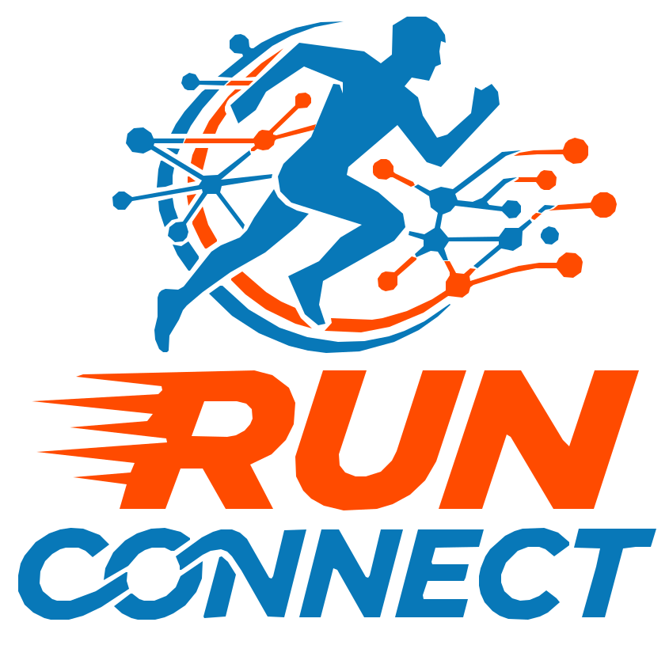

Activity recording
Record running activities with GPS and keep the original track data on the device.

Run Connect is an independent Android running app project created by an individual developer for learning, experimentation, and personal use. It brings activity recording, running history, performance metrics, and structured workouts together in one place.
Contact the developer ↗Run Connect is developed independently by Fernando Della Monica Pereira in Brazil. It is currently a non-commercial learning project, intended for personal and family use. It is not offered as a commercial service or subscription product.
Record running activities with GPS and keep the original track data on the device.
Review distance, duration, pace, splits, and other activity information.
Create and manage workout plans and training steps.
Core run recording is designed to work without an internet connection.
The project is exploring the Garmin Connect Developer Program to evaluate an official way to connect running activities and structured workouts with Garmin Connect and compatible devices. No Garmin integration is currently active or available in Run Connect. Any implementation depends on Garmin approval, API access, and technical validation.
UNDER EXPLORATION · NOT AVAILABLE YETGarmin and Garmin Connect are trademarks of Garmin Ltd. or its subsidiaries. Run Connect is an independent project and is not affiliated with, sponsored by, or endorsed by Garmin.
Fernando Della Monica Pereira
Independent developer · Brazil
runconnect@proton.me